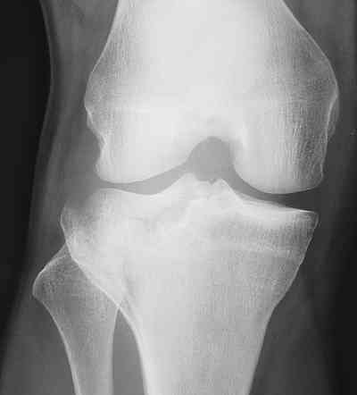
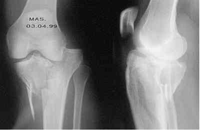
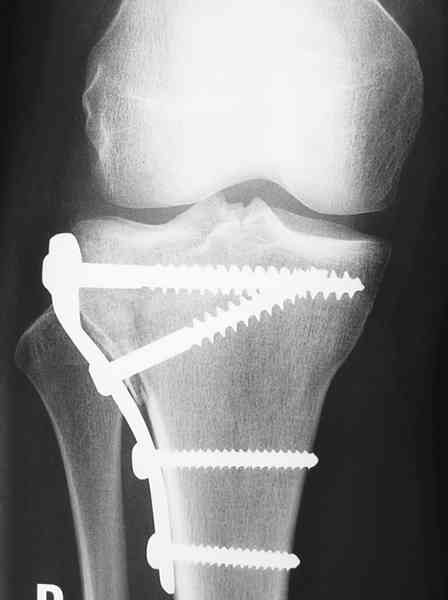
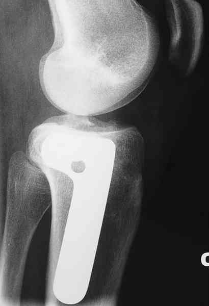

Bienvenue Sur Medical Education
Fractures : plateau tibial
Spécialité : traumatologie /
Points importants
-
Le genou est généralement oedématié, ecchymotique, hyperalgique et l’impotence fonctionnelle peut être totale : dans ce cas avant tout examen clinique détaillé (hormis la recherche des complications vasculo-nerveuses), il faut demander des radiographies (face + profil) à la recherche d’une fracture.
Présentation clinique / CIMU
SIGNES FONCTIONNELS
-
Douleur +++
-
Souvent, impotence fonctionnelle totale
CONTEXTE
Présentation clinique / CIMU
SIGNES FONCTIONNELS
- Douleur +++
- Souvent, impotence fonctionnelle totale
CONTEXTE
Circonstances
- Choc direct violent en général
- Parfois simple torsion (ski…)
EXAMEN CLINIQUE
Inspection
- Recherche la présence de contusions cutanées, de dermabrasions, d’ecchymoses…
Palpation
_916
- - -
Examen clinique du genou
_912
- - -
Choc rotulien
Radiographie
On distingue

_861
Photo
Fracture uni-tubérositaire externe du plateau tibial

_862
Photo
Fracture uni-tubérositaire interne du plateau tibial
Fractures déplacées

_864
Photo
Ostéosynthèse par plaque vissée d�??une fracture du plateau tibial externe

_865
Photo
Ostéosynthèse par plaque vissée d�??une fracture du plateau tibial externe
Fractures non déplacées
Fractures parcellaires Auteur(s) : Jean-Jacques BANIHACHEMI, Dominique SARAGAGLIA
Signes paracliniques
Diagnostic étiologique
Diagnostic différentiel
Traitement
Surveillance
Bibliographie